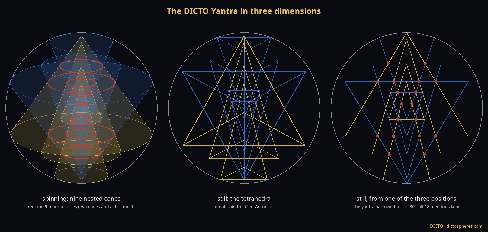
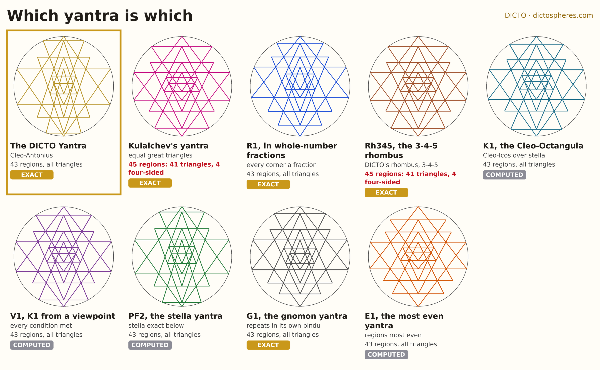
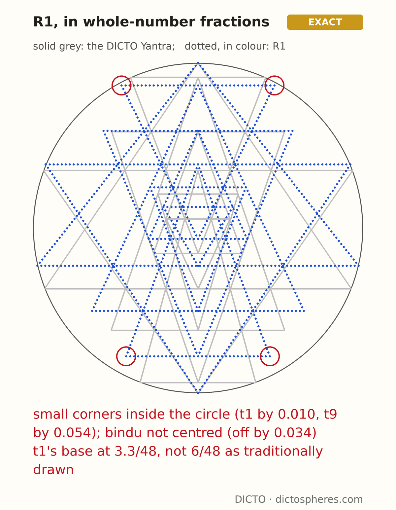
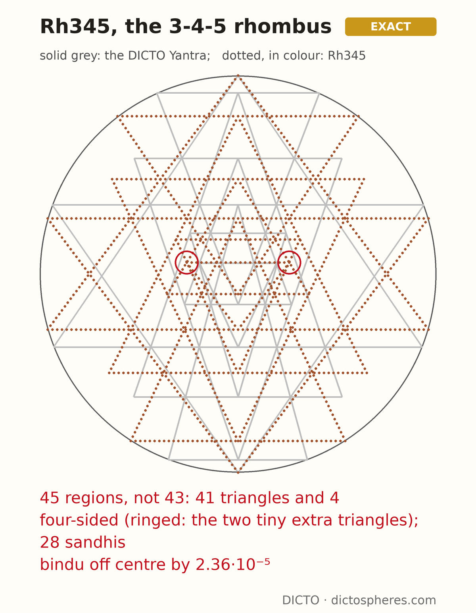
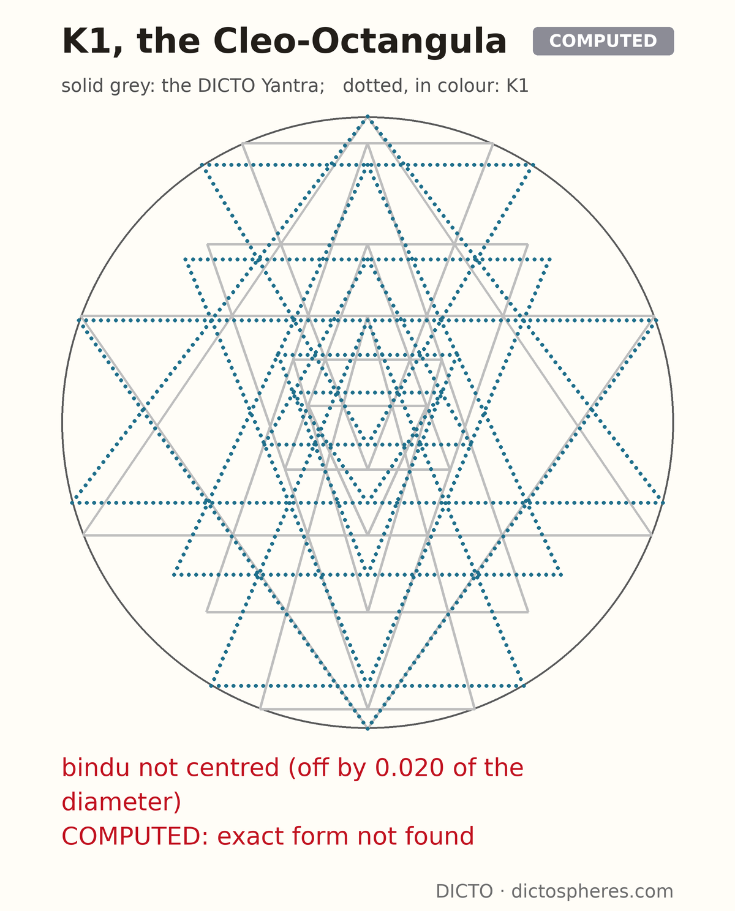
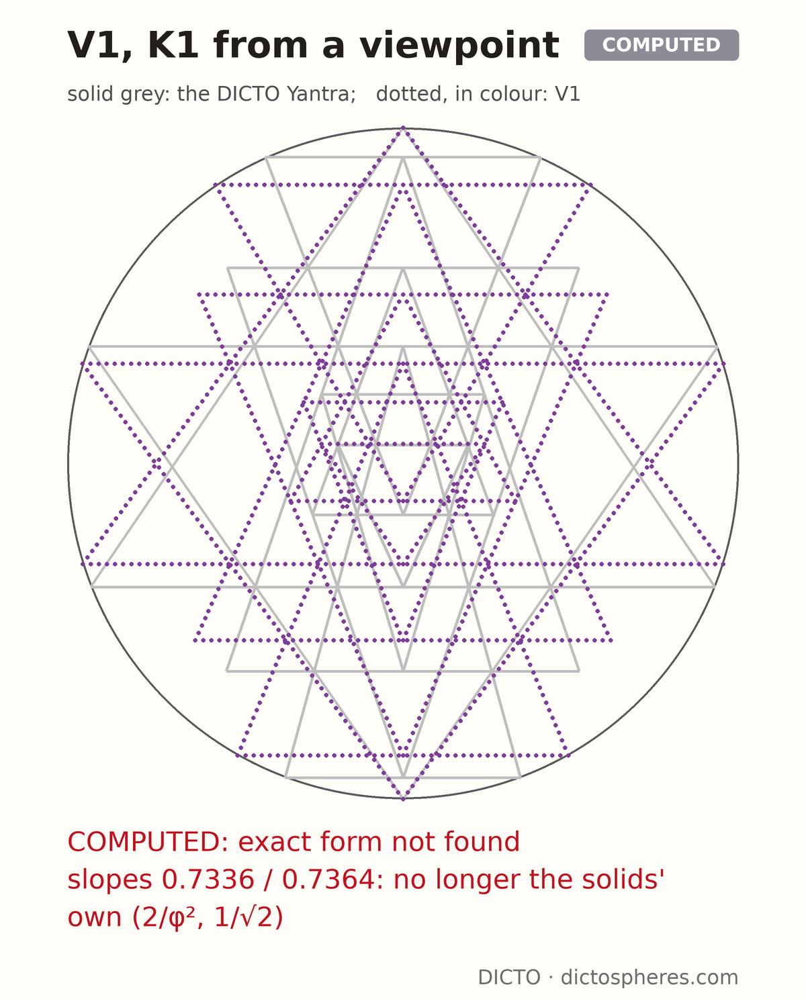
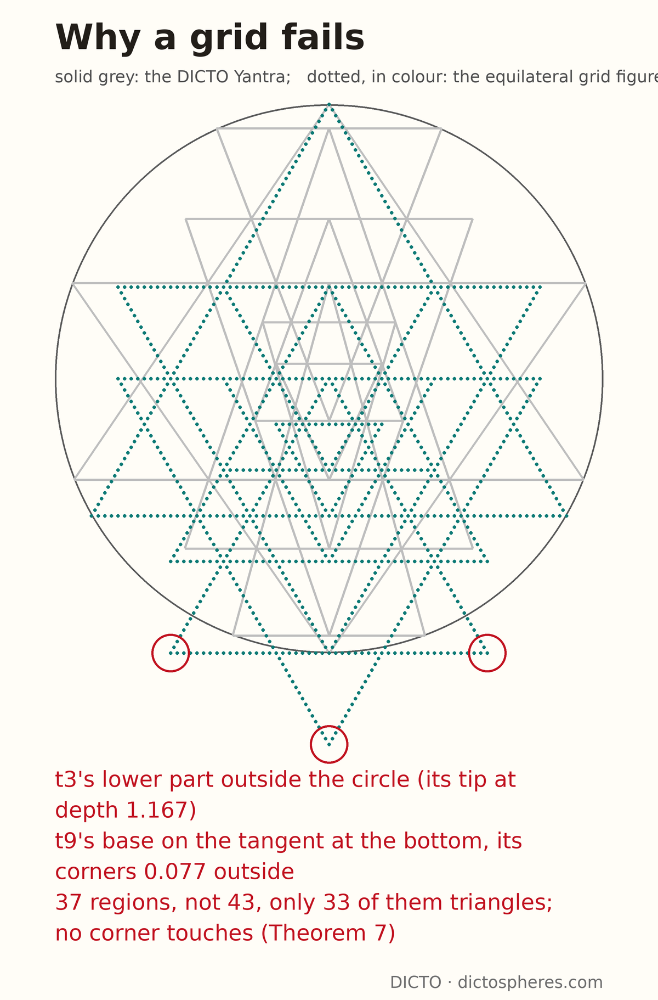
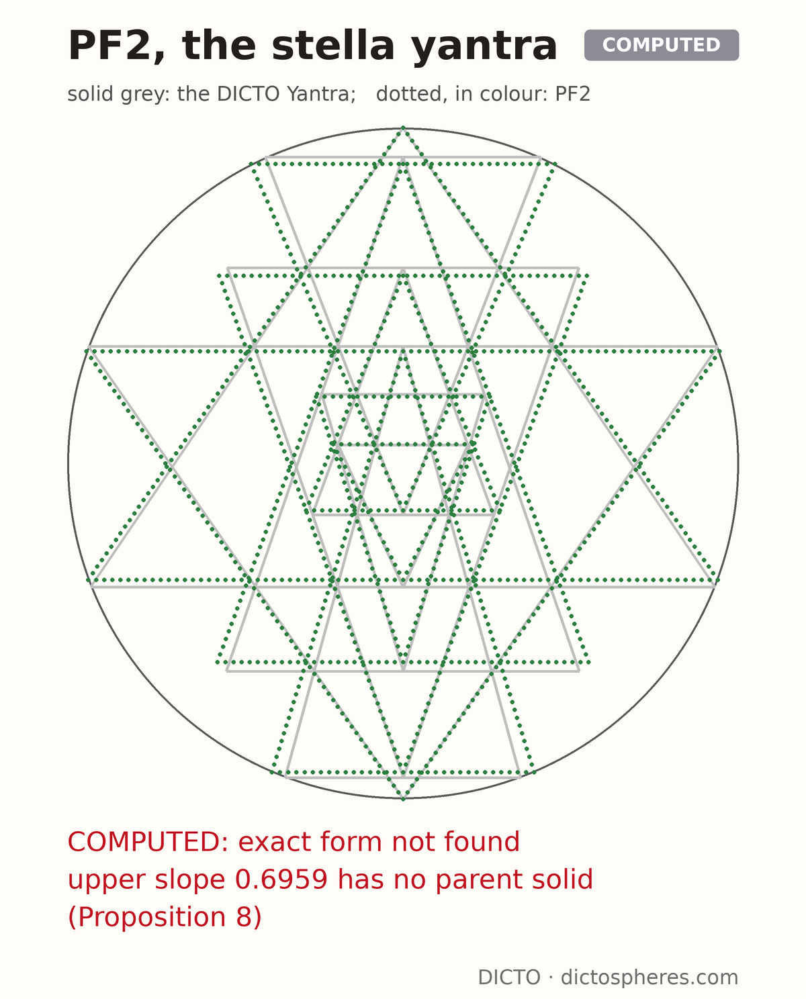
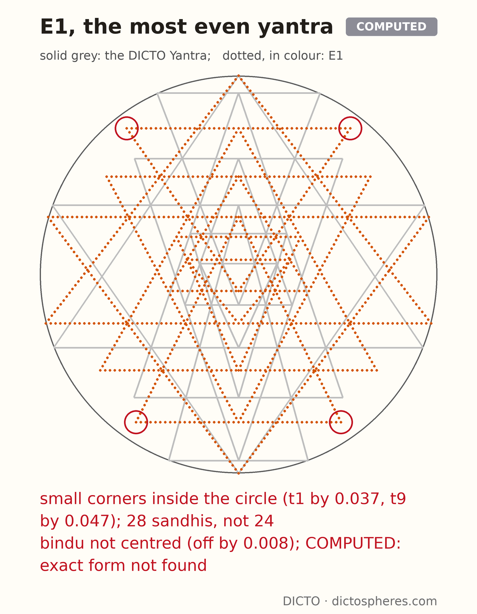
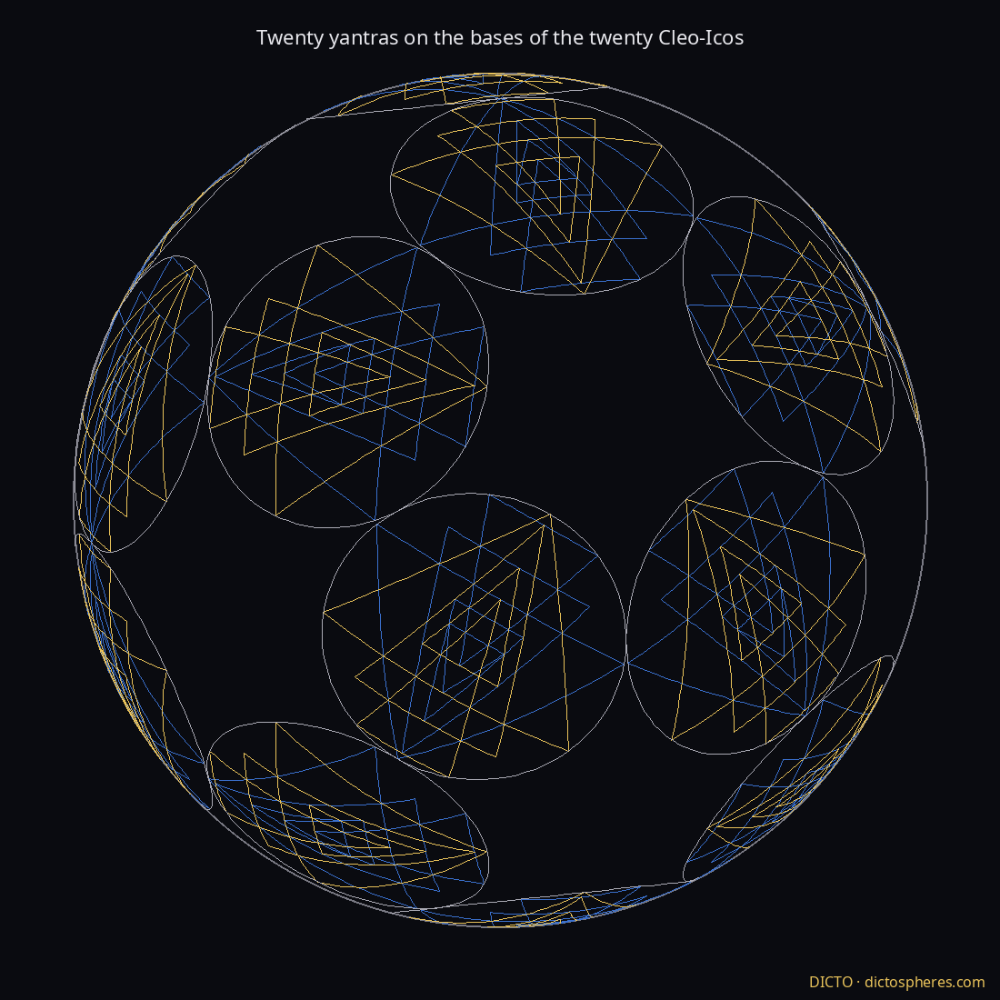

A Śrī Yantra is nine triangles in a circle, four pointing up and five pointing down, drawn so that their sides cross three at a time at eighteen points. Drawn by hand, the crossings never quite close; the figure has been drawn by eye and solved by numbers. This paper solves two of them exactly: the classical yantra of Kulaichev, whose exact solution Pustynski thought probably impossible, and the DICTO Yantra, which meets every traditional demand at once. On the way it gives a yantra in whole-number fractions and yantras built on solids that DICTO proposed, and it ends with a choice every exact yantra has to make.

Model. The circle has diameter 1; depth d is measured down from its top point O, T is its bottom point. The nine triangles t1 … t9 follow Chiodo's numbering, bases from top to bottom: t1–t5 point down, t6–t9 point up. Triangle ti has base depth bi, half-width wi and apex depth ai. The two great triangles are inscribed: t7 has its apex at O, t3 at T, and their corners lie on the circle. The upper great triangle t7 has leg slope u (half-width per depth from O), the lower one t3 has leg slope v (from T). Writing P = b3, Q = b6, R = b7, S = b9 (Chiodo's parameters), the circle gives P = v²/(1+v²), R = 1/(1+u²), w3 = v/(1+v²), w7 = u/(1+u²): the rational parametrisation of the circle.
The demands. (i) Apex on base: a8 = b1, a6 = b2, a9 = b3, a1 = b6, a5 = b7, a4 = b8, a2 = b9. (ii) The 18 marmas, nine mirror pairs of points where a down-leg, a base and an up-leg meet: (1,2,7), (2,3,7), (1,3,8), (1,4,6), (1,5,9), (4,6,9), (2,7,9), (3,7,8), (3,8,9). Their incidences per triangle are 8, 6, 8, 4, 2, 4, 8, 6, 8, as in Kavi Mahesh's table. (iii) Six corner touches, a corner of one triangle on another's side: (4,4,8), (5,5,6), (2,6,6). These are the conditions of Chiodo, equivalent to Huet's; every yantra in this paper except the grid yantra of §7 satisfies them all. Kulaichev, Rao and Pustynski add four more: (a) t3 ≅ t7; (b) t1's base corners on the circle; (c) t9's base corners on the circle; (d) the incircle of the bindu (the innermost triangle, between t1's legs and t5's base) centred on the circle's centre. Tradition also counts 43 small triangles and 24 sandhis (points where exactly two sides cross). We say a yantra meets every condition when it meets (i)–(iii), (b), (c), (d) and has 43 triangles, 18 marmas and 24 sandhis; that is, Kulaichev's three conditions (b), (c), (d) (both small triangles' corners on the circle, bindu centred) with the traditional 43.
Reference images. DICTO's reference was a photograph of a gold embossed yantra (338 px, tilted): its layout matches the model (t7's apex at the top, t3's at the bottom, nine level lines, 4 + 5 triangles); a rough reading gives P ≈ 0.39, R ≈ 0.63, u ≈ v ≈ 0.8, not precise enough to tell a kite from a rhombus. Later DICTO compared the exact yantras with H. J. T. Matos's painted yantra (2023, CC BY-SA 4.0), used as a reference only and not reproduced here.
The figures. From Figure 3 on, each variant yantra is drawn dotted in its own colour over the DICTO Yantra drawn solid in faint grey, in the same circle, with its name and its shortcomings in red on the image (overlay.py; every red note is measured from the stored coordinates or quoted from Table 3, and the script stops if one is not true).
Proof. Given u and v, the great triangles are rational (above). Following Chiodo's construction (his Fig. 4), every further line is found by intersecting lines already drawn, a rational operation, except one step: the closing step (Apollonius' circle–line–point problem) is a quadratic equation in b1. All later coordinates are rational in b1 and the inputs, so they lie in ℚ(√Δ). The script quadratic_family.py re-proves all 23 condition expressions with exact fractions in ℚ(√Δ), without floating point, for the examples of Table 1. ∎
| yantra | u, v, Q, S | field | max |Δb| from Huet's classical depths | odd pieces by ring |
|---|---|---|---|---|
| R1 | 19/24, 2/3, 8/15, 8/9 | ℚ (Δ a square) | 0.054 | 14, 10, 10, 8, 1 |
| Q1 | 13/16, 12/17, 29/54, 5/6 | ℚ(√Δ) | 0.0031 | 14, 10, 10, 8, 1 |
| Q2 | 4/5, 7/10, 8/15, 5/6 | ℚ(√Δ) | 0.020 | 14, 10, 10, 8, 1 |
| Q3 | 3/4, 3/4, 11/20, 11/12 (3-4-5 rhombus) | ℚ(√Δ) | 0.082 | 14, 10, 12, 8, 1 |
Table 1. Examples of Theorem 1 (study data quadratic-examples.json, quadratic-family-data.txt; factor list of Δ in discriminant-log-data.txt).
Proof. For these values Δ is a square, so by Theorem 1 the field is ℚ. The conditions were checked with exact fractions by quadratic_family.py and, independently, by check_r1_independent.py, written apart from the model: it rebuilds the nine triangles from the stored fractions alone and finds exactly 18 points where three sides meet, with the two great triangles' corners exactly on the circle. ∎
R1 was the only rational yantra in two searches: 9.7 million parameter sets (denominators up to 40), then 627 million values of S over 14 336 slices (u, v, Q) with denominators of S up to 1200, the search re-finding R1 as a self-test. The fibres are curves of genus 2, so rational yantras are expected to be rare. R1 is admissible but higher than the traditional drawing: t1's base lies at 3.3/48 against 6/48 on the traditional grid, its top and bottom small triangles sit inside the circle (t1's corners by 0.010, t9's by 0.054), and its bindu is off centre by 0.034 (Figure 3).

Check. figure.py builds the full arrangement of the 27 sides, lists its faces, and counts for each face the triangles containing it; counts.py counts, with exact fractions from the stored 40-digit values, the points where exactly three sides meet (marmas) and exactly two (sandhis), leaving out corners. The traditional shading alternates from ring to ring, so the shaded pieces are the odd ones. ∎
DICTO proposed the upright rhombus: the two legs of t7 (from O) and the two legs of t3 (from T), the four longest lines of the yantra, meet at E± = (±uv/(u+v), v/(u+v)). The figure O-E-T-E is a kite in general and a rhombus exactly when u = v, which is Kulaichev's condition (a); then its diagonals are 1 : u and its angle at O and T is 2 atan u.
| yantra | angle O | angle T | angle E | diagonal ratio | shape |
|---|---|---|---|---|---|
| Huet classical | 78.23° | 70.37° | 105.70° | 0.7552 | kite |
| Kaivalyāśrama grid | 75.52° | 73.04° | 105.72° | 0.7572 | kite |
| Kavi Mahesh | 78.46° | 70.53° | 105.50° | 0.7579 | kite |
| Kulaichev–Rao–Pustynski | 73.77° | 73.77° | 106.23° | 0.75044 | rhombus |
| R1 / Q1 / Q2 | 76.73 / 78.19 / 77.32° | 67.38 / 70.44 / 69.98° | — | 0.724 / 0.755 / 0.747 | kite |
Table 2. DICTO's rhombus in published and new yantras (rhombus.py, rhombus-data.txt).
The 3-4-5 rhombus. Taking u = v = 3/4 (diagonals 3 : 4, inscribed triangles on 9/25, 16/25, 12/25) with (b) and (c) gives an exact yantra, Rh345: S = b9 = (21464 + 56√56869)/37825 with 56869 = 29·37·53, and Q = b6 and b1 have irreducible minimal polynomials of degree 20; all 23 conditions are checked exactly in that number field (rhombus345_exact.py). Kulaichev's condition (d), measured and not imposed, misses by 2.36·10⁻⁵ of the diameter; Kulaichev's own yantra has u = 0.750439. The golden rhombus (diagonals 1 : φ) and the 60°/120° rhombus also give admissible exact yantras, far from the classical look (t1's base at 0.65/48 and 0.30/48, incircle off by 0.017 and 0.024); a square is impossible (P = R = 1/2, the bases of t3 and t7 coincide). The natural special rhombus is the 3-4-5 rhombus, not the golden one.
Kulaichev's yantra, Rh345 and Q3 have 45 odd pieces, not 43: their third ring holds 12 pieces, not all of them triangles. This confirms Pustynski's remark (2014, §2.5) about "two additional tiny triangles". In Kulaichev's yantra the two smallest pieces of the third ring have area about 10⁻⁷ (circle of diameter 1), too small to see at print size; Figure 4 rings where they lie. Which pairs of slopes bring them is taken up in §9.5.


DICTO proposed the triangles as tetrahedra in a sphere, the stella octangula as the rhombus's solid, and spinning tetrahedra. Seen down its three-fold axis the regular stella octangula is the hexagram; seen from the side, its two tetrahedra show the upright rhombus (Figure 5). Spun about the axis, a regular tetrahedron with a level base sweeps a cone of slope 1/√2 = 0.707, the stella's slope; DICTO's Cleo-Icos (the icosahedron's face pyramid, #29) sweeps a cone of slope 2/φ² = 0.764. Huet's classical yantra has 0.813 above and 0.705 below, Kulaichev's 0.750 for both.

Proof. (1) A triangle with apex on the axis and level base, spun about the axis, gives a cone whose section through the axis is the triangle; so the section of the nine cones is the yantra. A marma at (x, d) lies on two legs and a base; spun, it traces the circle of radius |x| at depth d, which lies on both cones and on the level disc; the mirror point (−x, d) traces the same circle, so 18 points give 9 circles. (2) An equilateral base inscribed in a circle of radius w has side √3 w; seen along a direction perpendicular to one side, its outline has half-width (√3/2) w = w cos 30° and the pyramid's outline is the triangle of the same tip and base depth with half-width w cos 30°. Turning a tetrahedron by 60° changes which side faces the viewer but not the outline's width, and the three positions are equivalent by the three-fold symmetry. Scaling every horizontal distance by cos 30° is an affine map, which keeps lines and every meeting. ∎
DICTO proposed the viewpoint: a change of perspective that makes one yantra meet every demand. A tilted circle seen from the right point still looks round. In the unit disc (y up, O at (0, 1), T at (0, −1)) these perspectives are the maps
Tβ(x, y) = ( x√(1 − β²) / (1 + βy), (y + β) / (1 + βy) ), −1 < β < 1,
which in modern terms are the translations of Klein's model of the hyperbolic plane along the axis.
Proof. Tβ is a projective map (both coordinates are fractions with the same linear denominator), so lines go to lines and incidences are kept. On the circle, x² = 1 − y² gives x′² + y′² = [(1 − y²)(1 − β²) + (y + β)²]/(1 + βy)² = (1 + βy)²/(1 + βy)² = 1. The axis x = 0 is fixed, (0, ±1) are fixed, and a level line y = c goes to the level line y′ = (c + β)/(1 + βc); dy′/dy = (1 − β²)/(1 + βy)² > 0 keeps the order of depths. For a point on a leg through O, 1 − y′ = (1 − β)(1 − y)/(1 + βy), so x′/(1 − y′) = λ · x/(1 − y); through T, 1 + y′ = (1 + β)(1 + y)/(1 + βy), so x′/(1 + y′) = (x/(1 + y))/λ. The incircle is not a projective notion, so its centre moves. ∎
The Cleo-Octangula yantra K1 (§9.2) has both small triangles on the circle, but its bindu is off centre by 0.020 of the diameter. Seen at β = −0.0405464286 (λ = 0.9602432222), its bindu is centred while both small triangles stay on the circle: every condition at once, with 43 triangles, 18 marmas and 24 sandhis. Its slopes become 0.7335605 above and 0.7363830 below, whose product is still (2/φ²)(1/√2) = 0.5401815. This is V1 (Figure 7, right): seen in perspective, the Cleo-Octangula meets every condition, though its slopes are then no longer those of the two solids. A direct solve of "uv fixed, (b), (c), (d)" for the Cleo-Octangula product returns u = 0.733560546791, v = 0.736382996384, the same yantra.


DICTO proposed a simpler formula. Let t1's corner be the circle point (x, d) = (t/(1+t²), t²/(1+t²)) and keep u, v, S.
Proof. natural.py derives G, Q and H symbolically from the model: (c) is w9² = S(1 − S) with w9 linear in S; the marma (1,3,8) makes Q linear once t1's leg is fixed by t; the closing (Apollonius) equation of the construction is then cleared of denominators and factored. On the DICTO Yantra the three residuals are 1.7·10⁻³², 8.8·10⁻³⁴ and 3.6·10⁻³¹. ∎
The earlier blind searches for exact forms failed because the old coordinates hid this structure. With u and v fixed by solids, (b) and (c) leave a curve given by G and H; (d) is one more equation, and eliminating S and t from G, H and the bindu condition gives one polynomial for u over ℚ(√5). That elimination has now been carried out: its result is Theorem 9 (§10).
DICTO proposed the triangular grid, after the Matos painting, and then the Cleo grid: all nine triangles similar, with one leg slope s (s = 1/√3 equilateral, s = 1/φ the Cleo-Icos side face).
Proof. With one slope, two legs of slope s from tips at depths ai and ak, one pointing down and one up, cross at depth (ai + ak)/2, whatever s. So a marma (i, j, k) is the linear condition bj = (ai + ak)/2, an apex-on-base is ax = by, and a corner touch of i on j is bi = (ai + aj)/2. Solving the 16 conditions of (1) leaves two free depths and gives the sizes ai − bi as multiples of b9 − b8: 2, 4, 4, 2, 1, 2, 9/2, 3, 3 for t1 … t9, which doubled are the ratios above. Adding the three corner touches leaves one free depth and every size 0 (one_slope.py). (3) An inscribed triangle with its tip on the circle and leg slope s has height 1/(1 + s²); t3 and t7 would need the same height, but their heights are in the ratio 8 : 9. ∎
With t7 inscribed, t3's tip falls outside the circle, at depth 7/6 = 1.167 for the equilateral grid and 1.126 for the Cleo grid, and the pieces are 12, 9, 6, 9, 1 (37), not 43. The slope only stretches the yantra sideways, so the two grids give the same yantra up to that stretch. A grid yantra is exact in every meeting but is not the traditional figure; painted grid yantras relax exactness.

With both great slopes fixed by solids, only two of (b), (c), (d) can be imposed. DICTO chose the stella: keep the stella's tetrahedron exact below (v = 1/√2) and free the upper slope. The result, PF2 (§9.3, Figure 9), has upper slope u = 0.695886431693, whose base corners lie 110.332934° round the circle from its tip (cos = (u² − 1)/(u² + 1)); the stella's lower triangle has 109.471221°, the tetrahedral angle.

Proof. (1) is the finite search search.py (data-search.txt), which lists every angle between corners of every listed solid. (2) cos α = (u² − 1)/(u² + 1) is rational exactly when u² is. findpoly finds no integer polynomial of degree ≤ 8 for u, which supports, but does not prove, that u² is irrational. Golden symmetry stops at H4 in dimension 4, which (1) covers. ∎
So the upper slope of PF2 is the yantra's own number. Regular polygons with many sides (angles a rational fraction of a turn) were not searched.
Every yantra in this section lies in the family of Theorem 1, so its 18 marmas, corner touches and apex-on-base points are exact for its parameters. What is computed is which parameters meet the further conditions: solved with 60-digit arithmetic to 10⁻⁵⁰ (E1: double precision, then rebuilt at 60 digits); the values below are cut from the stored files without rounding. Two of them, the DICTO Yantra and Kulaichev's yantra, are now known exactly (§10); the exact forms of the others are open.
| yantra (great pair) | u (upper) | v (lower) | (b) (c) | (d) | pieces | marmas | sandhis | nesting k |
|---|---|---|---|---|---|---|---|---|
| DICTO Yantra (GF1), exact Cleo-Antonius, from a viewpoint | 0.6793185887 | 0.6950140374 | yes | yes | 43 | 18 | 24 | 0.05498385 |
| Cleo-Octangula K1 Cleo-Icos / stella | 2/φ² = 0.763932 | 1/√2 = 0.707107 | yes | no | 43 | 18 | 24 | — |
| Cleo-Octangula V1 Cleo-Octangula, from a viewpoint | 0.7335605468 | 0.7363829964 | yes | yes | 43 | 18 | 24 | 0.05750553 |
| stella yantra PF2 free / stella | 0.6958864317 | 1/√2 | yes | yes | 43 | 18 | 24 | 0.05634293 |
| PF1 Cleo-Icos / free | 2/φ² | 0.7621139499 | yes | yes | 45 | 18 | 28 | 0.05617825 |
| gnomon yantra G1 Cleo-Icos / stella | 2/φ² | 1/√2 | (b) only | yes | 43 | 18 | 24 | 0.06307419 |
| K2 stella / Cleo-Icos | 1/√2 | 2/φ² | yes | no | 43 | 18 | 24 | — |
| K3, K4 φ/2 / stella, φ/2 / Cleo-Icos | φ/2 | 1/√2, 2/φ² | yes | no | 45 | 18 | 28 | — |
| stella rhombus yantra stella / stella | 1/√2 | 1/√2 | yes | no | 43 | 18 | 24 | — |
| Cleo rhombus yantra Cleo-Icos / Cleo-Icos | 2/φ² | 2/φ² | yes | no | 45 | 18 | 28 | — |
| Kulaichev–Rao–Pustynski, exact | 0.7504385160 | 0.7504385160 | yes | yes | 45 | 18 | 28 | — |
| Rh345 3-4-5 rhombus | 3/4 | 3/4 | yes | no | 45 | 18 | 28 | — |
| most even E1 | 0.7777407207 | 0.7434588452 | no | not imposed | 43 | 18 | 28 | — |
Table 3. The yantras of the family (golden_family.json, kites.json, viewpoint.json, perfect.json, gnomon.json, even.json, cleo-yantra.json, kulaichev-numeric-data.txt). Pieces = odd pieces (figure.py); marmas and sandhis by counts.py with exact fractions from the stored digits; for E1, Kulaichev's yantra, Rh345, the stella and Cleo rhombus yantras and K1 the counts were redone for this paper at 60 digits; k = bindu inradius / circle radius (§9.4).
DICTO proposed a side of Antonius in place of the stella. Antonius (D65, the golden antiprism, #44) is the Cleo-Icos's own partner: Cleo + Antonius + Cleo make the golden rhombohedron. Its side faces have slope exactly 1/φ (apex 63.43°). DICTO named the pair the Cleo-Antonius: the Cleo-Icos cone above (2/φ²), the Antonius side below (1/φ), product 2/φ³, all in ℚ(√5). By Theorem 5 only the product matters for (b), (c) and the counts, and a viewpoint can then win (d). The member that meets every condition, solved directly from "uv = 2/φ³, (b), (c), (d)", is the DICTO Yantra (Figure 1):
u = 0.679318588706774657388650310391,
v = 0.695014037372934486335281853716,
with P = 0.3257114053, Q = 0.5765103217, R = 0.6842408243, S = 0.9682686075, every condition met, 43 triangles, 18 marmas and 24 sandhis. Its product uv equals 2/φ³ = 0.4721359550. Dividing u by 2/φ² gives λ = 0.8892395772, and v · λ = 1/φ: by Theorem 5 the DICTO Yantra is, exactly, the yantra on the Cleo-Icos and the Antonius side (with (b) and (c)) seen through Tβ with β = (λ² − 1)/(λ² + 1) = −0.11685. DICTO named it the DICTO Yantra. Its exact form is Theorem 9.
DICTO proposed the Cleo-Icos as the great pair, then the kite proportion: keep the Cleo but not the rhombus. The Cleo-Octangula is DICTO's name for the pair of a Cleo-Icos above and the stella's tetrahedron below (u = 2/φ², v = 1/√2). With (b) and (c) it gives K1 (Figure 7, left): valid, exactly the traditional 43 triangles (14, 10, 10, 8, 1), 18 marmas, 24 sandhis; P = 1/3 exactly (the lower great triangle's base at one third), Q = 0.53625 (Huet's classical 0.537), R = 0.63148, S = 0.93007. Its numbers need both √5 (the Cleo) and √2 (the stella). It misses (d); seen from the viewpoint that centres its bindu it is V1 (§5).
Fixing both great slopes leaves room for only two of (b), (c), (d). DICTO chose the stella: PF2 keeps the stella's tetrahedron exactly below and frees the upper slope, 0.695886 (apex 69.67° against the stella's 70.53°). Then every condition holds at once, with the traditional 4 up, 5 down, 43 triangles, 18 marmas and 24 sandhis (Figure 9). Its upper slope has no parent solid (Proposition 8). Keeping the Cleo-Icos above instead (PF1) also meets (b), (c), (d), but has 45 pieces and 28 sandhis.
DICTO proposed a gnomon like his Julias (#54). When the bindu's incircle is centred, a copy of the whole yantra scaled by k = (incircle radius)/(circle radius) fits that incircle exactly and concentrically; the yantra outside it is a gnomon and the yantras nest without end. Every yantra meeting (d) nests: the DICTO Yantra at k = 0.0549838452, V1 at 0.0575055271, PF2 at 0.0563429292. The figure shows G1, the Cleo-Octangula with (b) and (d) only (k = 0.0630741873, 1/k = 15.8543; t9's corners 0.072 of the diameter inside the circle, power −0.066); the Cleo-Octangula with (c) and (d) gives no valid yantra.

The two extra tiny pieces (45 odd pieces with 28 sandhis instead of 43 with 24) appear in every one of Kulaichev's yantra, Rh345, Q3 and the Cleo rhombus yantra, all with u = v; but the stella rhombus yantra (u = v = 1/√2, with (b) and (c)) has the traditional 43 and 24, and the unequal pairs K3, K4 and PF1 have 45 and 28. So equal great triangles do not decide the count: it depends on the slopes themselves. In every yantra of Table 3 with (b) and (c), 45 pieces came with 28 sandhis and 43 pieces with 24. A rule for when the extra pieces appear is open.
Among exact yantras (all of Theorem 1's conditions, great triangles inscribed) with the traditional 43 pieces, E1 minimises the spread of the 43 areas (standard deviation over mean): u = 0.7777407207, v = 0.7434588452, Q = 0.5415589952, S = 0.8719616408, spread/mean 0.614, against 0.677 for Huet's classical yantra and 0.866 for the DICTO Yantra. Its t1 and t9 corners lie 0.037 and 0.047 inside the circle, as in painted yantras, and its bindu, not imposed, is off centre by 0.008. The pieces must shrink ring by ring toward the bindu: the smallest is 0.020 of the largest. E1 keeps 43 pieces and 18 marmas but has 28 two-line crossings (Figure 11).

Both elimination runs of Version 1 have now finished. They give in closed form the two yantras that meet a fourth condition besides (b), (c) and (d).
f160(u) = 10609948128…34663680 u¹⁶⁰ − 55713752664…10659840 u¹⁵⁸ + 98087076372…11494656 u¹⁵⁶ − … − 12007976289…36174336 u⁴ − 17216032895…71747840 u² + 26938540339…43182080
(the coefficients shown have 173, 176, 179, 206, 204 and 203 digits; first eleven and last eight digits printed; the full polynomial is the data file dicto-yantra-exact-u.txt)
Proof (computation). With uv = 2/φ³, the three conditions (b), (c), (d) are G and H of Theorem 6 and the bindu condition D. Eliminating S by resultants of G, H and D (sympy, 66 minutes; a first attempt was stopped by lack of memory), taking the norm from ℚ(√5) to ℚ, and keeping only the factors through GF1 (degrees (40, 40) and (40, 56) in (t, u)) leaves two polynomials in t and u; their resultant in t (PARI/GP, 40 seconds) has degree 2240 in u and factors in PARI into factors of degree 1 (to the power 1600), 160, 160 and 320. The factor of degree 160 is the one with GF1's u as a root (dicto_exact.py, dicto_exact2.py, dicto_exact3.py). Independent check (verify_exact.py): the yantra was solved again straight from its geometric conditions by Newton's method at 260 digits, using no elimination and no polynomial; f160 vanishes at that u to a relative 1.6·10⁻²⁶², and f160 is irreducible in a second system as well (Singular via Sage, besides PARI). ∎
f348(u) = 26214400 u³⁴⁸ + 193986560 u³⁴⁶ − 3603431424 u³⁴⁴ − 23339810816 u³⁴² + 220275818496 u³⁴⁰ + … − 12624192 u⁴ + 1458432 u² − 62208
(leading coefficient 26214400 = 2²⁰·5², constant term −62208 = −2⁸·3⁵; the full polynomial is the data file kulaichev-minpoly-u.txt)
Proof (computation). kulaichev_exact.py, rerun on 9 November 2026 with every step saved, eliminates with Singular resultants and keeps at each step only the factor through the numeric point: the core with Eb and with Ed (degrees (56, 10, 12) and (54, 11, 12) in (u, Q, S)), then Q (degree 192 in u and 38 in S, 37 minutes), then S (degree 348). The first attempt (8 November) had stopped at its 20-minute time limit, not at a mathematical obstacle. Independent check (verify_exact.py): the yantra was solved again straight from its geometric conditions by Newton's method at 260 digits, using no polynomial; f348 vanishes there to a relative 4.9·10⁻²⁶⁴, and it is irreducible in Singular via Sage as well as in PARI. ∎
The check run backwards. DICTO proposed running the check backwards (backwards.py). From each polynomial alone, with no geometry, its real root near the yantra fixes u (PARI, 265 digits); Q and S are then solved from the two corner conditions (b) and (c) only. The third condition, the bindu centred, is not imposed, yet it holds to 1.1·10⁻²⁵⁵ for the DICTO Yantra and 5.1·10⁻²⁶² for Kulaichev's yantra, and every one of Huet's conditions (the 18 marmas, the tips on bases, the corner touches) holds to 5·10⁻²⁶². The rebuilt yantras have 14, 10, 10, 8, 1 = 43 pieces (the DICTO Yantra) and 14, 10, 12, 8, 1 = 45 (Kulaichev's yantra), as in Table 3.
Theorem 10 is consistent with what was known: Kulaichev bounded the degree by 12544 (348 is below it), and an integer-relation search found no polynomial of degree ≤ 96 (348 is above it). Pustynski (2014) thought a purely analytical solution of the last two steps of the construction "probably impossible"; Theorem 10 gives the yantra's exact algebraic number. We found no earlier exact form in the sources checked (§14).
Check. The counts are those of Table 3 (figure.py, counts.py); overlay.py recounts the odd pieces from the stored coordinates (45 = 14 + 10 + 12 + 8 + 1 and 43 = 14 + 10 + 10 + 8 + 1). The degrees are Theorems 9 and 10. ∎
A lower degree is a fact about the number, not a ranking of the yantras. The four-parameter family of Theorem 1 with (b), (c), (d) leaves one degree of freedom; a fourth condition fixes one yantra. Equal great triangles (Kulaichev) and the Cleo-Antonius product uv = 2/φ³ (DICTO) are two choices of that fourth condition, and the family cannot single out "the" yantra by itself. What the choices give is a fact: Kulaichev's choice gives two extra tiny pieces, DICTO's keeps the traditional 43 and 24.
Projected from the centre of a sphere onto a plane touching it (gnomonic projection), every line of a yantra becomes a great circle and every meeting is kept (each marma is three planes through the centre sharing one line); the yantra's circle becomes a small circle, and every exact condition holds for any cap size. The upper great triangle cannot be made an exact spherical icosahedron face: its tip angle starts at 72.53° in the flat yantra V1 and only grows on the sphere, and its base angles never reach equality (cleo_cap.py).
DICTO proposed the Cleo sphere: twenty yantras (V1), one in the inscribed circle (angular radius 20.9052°) of each face of the spherical icosahedron, that is, on the base of each of the twenty Cleo-Icos; adjacent caps touch and twelve gaps sit at the icosahedron's corners. DICTO then proposed the 81-triangle sphere: each of the twenty faces split into four at its side midpoints, giving 80 triangles (20 central, 60 at the corners), 42 corners and 120 edges (Euler characteristic 2), with a DICTO Yantra in each triangle's inscribed circle and the corner yantras pointing to their icosahedron corner (five-petalled flowers at the 12 corners). With the bindu at the centre the count is 81, the number of figures of the Kongōkai mandala of 81 deities (Kongōkai hachijūisson mandara), the rarer form beside the usual Nine Assemblies (Kue) mandala, brought from China by Ennin and used mainly in Tendai esoteric Buddhism [12].



Every exact yantra found chooses between two goods: its small top and bottom triangles touching the circle, or its 43 pieces as even as they can be. The DICTO Yantra takes the first: on the Cleo-Antonius, every traditional condition holds, the corners touch the circle, the bindu is centred, 43, 18 and 24; it meets Kulaichev's three conditions (b), (c), (d) with the traditional 43, and is now known exactly (Theorem 9). The most even yantra takes the second: every meeting and the 43 kept, its corners just inside the circle as in painted yantras; its pieces are the most equal found (spread/mean 0.614 against 0.866). The grid yantras keep every meeting with integer heights but lose both: 37 pieces, and the circle cannot hold them.
Closed and exact. The DICTO Yantra (Theorem 9, degree 160); Kulaichev's yantra (Theorem 10, degree 348); R1, in whole-number fractions (Theorem 2); Rh345, in a number field of degree 20 (§3); the grid yantra, with integer height ratios (Theorem 7). With them the quadratic family itself (Theorem 1).
Computed. Every imposed condition met with 60-digit arithmetic to 10⁻⁵⁰ (E1 optimised in double precision, then rebuilt at 60 digits), exact form not found: K1, V1, PF2, G1, E1, and the other yantras of Table 3 (PF1, K2–K4, the stella and Cleo rhombus yantras). The elimination route of Theorem 9 applies to each of them.
Open. (1) Whether E1 is the most even yantra possible (a proof that the optimum is global), and whether any yantra with corners on the circle is as even. (2) The 45-piece rule in general: when the two extra pieces appear (§9.5). (3) A rational yantra nearer the traditional drawing (rational points on the genus-2 fibres); a rational yantra on the rhombus (Δ a square on a three-parameter slice). (4) Kavi Mahesh's rational heights made exact, in ℚ(√2, √3, √Δ). (5) Irrationality of u² for PF2 (Proposition 8 (2)).
Known, credited. (Huet 2002 and Kulaichev 1984 are known here through Chiodo, Pustynski and Kavi Mahesh, whose numbers our model reproduces; their full texts were not available to us.) Huet (1980s, published 2002) showed that the yantra has four free real parameters (five starting values tied by one equation) and solved it by Newton iteration; his classical yantra has P, Q, R, S = 0.332, 0.537, 0.602, 0.835 in Chiodo's form. Chiodo (2021) proved the whole four-parameter family constructible by straightedge and compass, the closing step being Apollonius' circle–line–point problem; so constructible parameters give constructible coordinates. Chiodo gives no explicit field, minimal polynomial or exact example. Kulaichev (1984), Rao (1998) and Pustynski (2014) fixed one rigid yantra by four extra conditions, known to 15 figures (Pustynski's Table 1, which our model reproduces to 3.9·10⁻¹⁵, all 14 of his significant figures); Kulaichev bounded its degree by 12544, and Pustynski thought a purely analytical solution of the last two steps "probably impossible" and remarked on two additional tiny triangles. Kavi Mahesh (2023) used rational heights with 16 of the 18 marmas exact by construction and two missing by 0.02% of the diameter. Tripathi (2025) drew it numerically with residual errors. Gonçalves, Mádr and Stříž (2009) drew the core in MetaPost. Kaivalyāśrama's traditional grid (P, Q, R, S = 17, 27, 30, 42 out of 48, as Chiodo suggests for traditional diagrams) puts t1's base corners outside the circle (power +0.031): the grid itself is not admissible.
New here, as far as these sources go. The exact minimal polynomials of the DICTO Yantra (Theorem 9) and of Kulaichev's yantra (Theorem 10) and their comparison (Proposition 11); the quadratic family with an explicit field (Theorem 1); a yantra in whole-number fractions (Theorem 2); the 43 as the odd pieces (Proposition 3); DICTO's rhombus and the exact 3-4-5 rhombus yantra; the yantra on solids (the stella octangula, the Cleo-Icos, the Cleo-Octangula, the Cleo-Antonius), in three dimensions (Proposition 4) and on spheres; the viewpoint principle (Theorem 5) and the yantras meeting every condition that it gives, the DICTO Yantra first; natural coordinates (Theorem 6); the one-slope theorem (Theorem 7); the gnomon nesting; the most even yantra and the choice of §12. We found none of these in the sources below, and claim no more than that.
Sources checked (8 November 2026). G. Huet, Śrī Yantra Geometry (2002): full text not reachable; used as quoted by Chiodo 2021 and Kavi Mahesh 2023. A. Chiodo, On the construction of the Śrī Yantra (2021): full text read. V.-V. Pustynski, On mathematical complexity of Śrīyantra (2014): full text read from insa.nic.in/writereaddata/UpLoadedFiles/IJHS/Vol49_3_5_Pustynski.pdf (the link DICTO gave, cahc.jainuniversity.ac.in, returns 404). A. P. Kulaichev, Śrīyantra and its Mathematical Properties (1984): the INSA PDF is a scan with no text layer; used as summarised by Pustynski and Chiodo. Kavi Mahesh, Understanding the geometry of Sri Chakra (2023): full text read at anantaajournal.com/archives/2023/vol9issue6/PartD/9-6-39-715.pdf. L. N. Gonçalves, M. Mádr, P. Stříž, Drawing the Shree Yantra Core with Metapost (2009): abstract page only (DML-CZ 10338.dmlcz/150096). B. Tripathi, texample.net/sri-yantra (TikZ, 30 November 2025). Web searches: "Pustynski Sri Yantra …", "Huet Sri Yantra Geometry … parameters", "arXiv Sri Yantra exact construction concurrency algebraic": no arXiv paper found. Named in Chiodo's bibliography and not read: Bolton–Macleod 1977, Fonseca 1986, C. S. Rao 1998, Tahta 1992, Santhi et al. 2012, Tularam 2012. DICTO's reference library (every manifest and text file) grepped for "yantra" and "Huet": no hits. H. J. T. Matos, painted Śrī Yantra (2023, CC BY-SA 4.0): DICTO's reference image, not reproduced. No new sources were checked for Version 2.
DICTO proposed the upright rhombus; DICTO proposed the triangles as tetrahedra in a sphere; DICTO proposed the stella octangula as the rhombus's solid; DICTO proposed spinning tetrahedra; DICTO proposed the Cleo-Icos as the great pair; DICTO proposed the kite proportion; DICTO proposed a gnomon like his Julias; DICTO proposed the viewpoint; DICTO proposed a side of Antonius in place of the stella; DICTO proposed a simpler formula (natural coordinates); DICTO proposed the triangular and Cleo grids; DICTO proposed the spherical yantra, the Cleo sphere and the 81-triangle sphere; DICTO proposed running the check backwards; DICTO proposed the dotted overlay figures with each yantra's shortcomings marked, and the title of Version 2. DICTO chose the stella for PF2. DICTO named the DICTO Yantra, the Cleo-Antonius and the Cleo-Octangula; the Cleo-Icos (#29) and Antonius (D65, #44) are DICTO's earlier pieces. DICTO's reference images: his photograph of a gold embossed yantra, and H. J. T. Matos's painting (CC BY-SA 4.0), used as a reference only and not reproduced. Computation and drafting with Claude (Anthropic).
Study 2026-11-08-sri-yantra: model.py (shared model; reproduces Pustynski's Table 1 to 3.9·10⁻¹⁵), quadfield.py and quadratic_family.py (Theorem 1, exact ℚ(√Δ) arithmetic), discriminant.py, rational_search.py and rational_search2.py (Theorem 2 searches), check_r1_independent.py, rhombus.py and rhombus345_exact.py (§3), figure.py and counts.py (Proposition 3, Table 3), stella_yantra.py, cleo_yantra.py, kites.py, gnomon_yantra.py and render_gnomon.py, perfect_yantra.py, viewpoint.py (Theorem 5), golden_family.py (the DICTO Yantra), natural.py (Theorem 6), dicto_exact.py, dicto_exact2.py and dicto_exact3.py (Theorem 9), lattice_yantra.py, lattice_clash.py, one_slope.py and grid_yantra.py (Theorem 7), even_yantra.py (E1), kulaichev_numeric.py, kulaichev_exact.py and kulaichev_algdep.py (Theorem 10), verify_exact.py and verify-exact-log.txt (the independent 260-digit check of Theorems 9 and 10, and irreducibility in Singular via Sage), backwards.py and backwards-log.txt (the backwards check: from each polynomial alone to the whole yantra), overlay.py (Figures 2–4, 7–9 and 11; it measures every red note and recounts the pieces). The two minimal polynomials are attached in full as data files: dicto-yantra-exact-u.txt (degree 160, Theorem 9) and kulaichev-minpoly-u.txt (degree 348, Theorem 10). Study 2026-11-08-tetra-yantra: frame.py, render3d.py (Proposition 4), spherical.py, cleo_cap.py, cleo_sphere.py, sphere81.py. Study 2026-11-08-yantra-4d: search.py, data-search.txt (Proposition 8). Each script ends with a checked FINAL line (grid_yantra.py prints FINAL FAIL by design: t3's tip lies outside the circle, which is Theorem 7's finding).